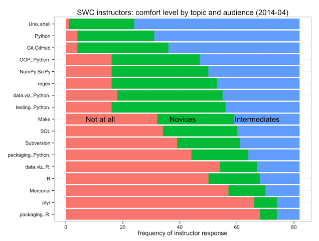

Summarizing Our Instructors' Skills
We've been asking bootcamp participants to tell us about themselves for a while now, so it seems only fair to share some information about our instructors. First, of the 82 instructors who responded to our survey two weeks ago, how many are comfortable teaching which topic to novices, to intermediates, or not at all?
| Not At All | Novices | Intermediates | |
|---|---|---|---|
| Python | 4 | 27 | 51 |
| …NumPy/SciPy | 16 | 34 | 32 |
| …Packaging | 44 | 20 | 18 |
| …OOP | 16 | 31 | 35 |
| …Data Visualization | 18 | 37 | 27 |
| …Testing | 16 | 40 | 26 |
| R | 50 | 18 | 14 |
| …Data Visualization | 54 | 13 | 15 |
| …plyr | 66 | 8 | 8 |
| …Packaging | 68 | 6 | 8 |
| Unix Shell | 1 | 23 | 58 |
| Git/GitHub | 4 | 32 | 46 |
| Mercurial | 57 | 13 | 12 |
| Subversion | 39 | 22 | 21 |
| SQL | 34 | 26 | 22 |
| Regular Expressions | 16 | 37 | 29 |
| Make | 32 | 27 | 23 |
Thanks to Jenny Bryan, we have a ranked visualization of those responses:

Second, who feels comfortable setting up on which platforms? (The responses don't sum to 82 because many people selected several options.)
| Linux | 71 |
|---|---|
| Mac OS X | 61 |
| Windows | 42 |
| Desktop VMs | 33 |
| Cloud VMs | 21 |
And finally, where are people from?
| North America | 60 |
|---|---|
| Europe | 13 |
| Australia/New Zealand | 6 |
| Sub-Saharan Africa | 1 |
| East Asia | 1 |
| South America | 1 |
We have information about instructors' research areas as well, but it's hard to categorize. Once we've recovered from running our biggest events ever, we'll dig into it a little more and share what we find; until then, you can download the raw data and tell us what correlations you can find.